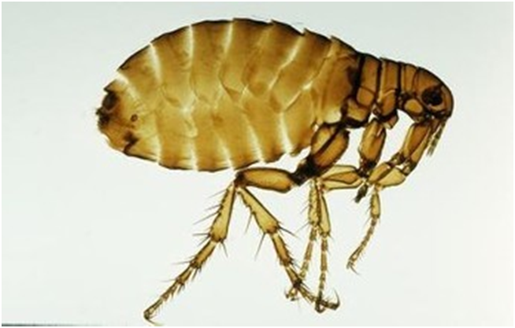
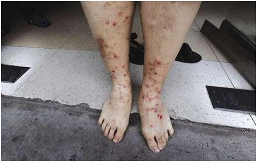
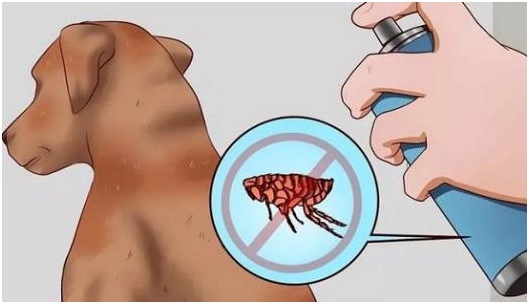
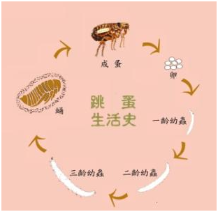

消杀防治跳蚤
发布时间：2021-07-08 19:28浏览次数：
· 除虫公司灭跳蚤的专业有效的方法
跳蚤通常生活在哺乳类身上，少数在鸟类。触角粗短。口器锐利，用于吸吮。腹部宽大，有9节。後腿发达、粗壮。完全变态昆虫。蛹被茧所包住。 身上有许多倒长着的硬毛，可帮助它在寄主动物的毛内行动。时代卫士今天就来说说，除虫公司灭跳蚤的专业有效的方法。

跳蚤不仅以叮咬和吸血对人们造成伤害，而更重要的是它们传播的疾病。跳蚤可以传播非典、猴痘、西尼罗河、乙型脑炎等多种传染病。鼠疫是一种死亡率极高的急性传染病。引起鼠疫的是一种很小的杆菌，名叫鼠疫杆菌。这种茵通过老鼠身上的跳蚤传染给人类。跳蚤吸食鼠疫患者的血液后胃中充满了鼠疫的杆菌，食道被细菌阻塞。它们虽是鼠蚤，但有时亦咬人。这种带菌的跳蚤吸入血时血液因食道被细菌阻塞无法入胃而从口部回流到被咬人的身体里，鼠疫细菌就在这时随同进入人体，使人患上鼠疫。跳蚤在吸食人血时还可能把粪便排在人的皮肤上，其中也合有大量鼠疫细菌。因为被咬部位发痒，搔痒时会将鼠疫细菌带入微细的伤口，也能使人染上鼠疫。

一、除虫公司环境治理
环境防治是根本性措施。包括个人和居室卫生；注意保持环境清洁以断绝幼虫的食物，避免跳蚤孽生；室内外应通风、透光以恶化跳蚤的生活环境。限制宠物在室内外的活动范围， 减少宠物感染蚤或蚤感染人的事件发生。
灭跳蚤的工作必须与灭鼠工作相结合，在鼠类防治期间同时实施灭跳蚤，否则鼠死后，跳蚤另寻宿主，增加人畜感染的风险。
二、除虫公司物理防制
1、粘捕法。用市售的粘蝇纸或粘蟑纸粘捕跳蚤，使用时将粘纸放在室内地面，粘捕2—3天后，收集在一起用火焚烧。
2、光诱捕法。用玻璃杯一只，内盛清水四分之三，水面上加四分之一的煤油，油的中央置一浮灯（灯芯系于硬纸上或嵌入软木塞中央），再将玻璃杯置于含有少许浓肥皂水的浅盘中。晚间点燃，放在地面上。跳蚤被灯光引诱，相继跳入盘中溺死。

3、吸尘器法。用吸尘器在染蚤房间地面吸尘，可以减少60%的卵和27%的幼虫，同时可以去除幼虫赖以生存的食物（成蚤血便、动物碎屑等有机物）和用于藏身的尘土。
4、热蒸汽法。热蒸汽清洗不仅能够杀死大多数成若蚤和蛹，而且还可以冲刷幼虫的食物。
5、宠物除蚤。用清洁剂或香波给动物洗澡，跳蚤均漂浮于水中，即使有残存跳蚤，由于清洁剂对跳蚤体表的腊质有破坏作用，因而也会很快死亡。用梳子给宠物梳理毛发，而后将梳于迅速放人加有肥皂粉的水中，这样一部分跳蚤会被消灭。

三、除虫公司化学防制
消灭跳蚤一般采用喷洒杀虫剂的措施，以迅速降低跳蚤的密度。除虫公司在生产车间、仓库等可喷洒倍硫磷、甲基嘧啶磷等有机磷杀虫剂；在有人居的环境，应喷洒氯氟氰菊酯等拟除虫菊酯类杀虫剂。此法具有快速、高效和比较简便的特点。但也易造成抗性的产生，因此，除虫公司在使用化学杀虫剂灭蚤时应尽可能防止抗性的产生。
目前常用的蚤类杀虫剂较多，如有机磷、氨基甲酸酯以及拟除虫菊酯类等，不同的治理场所选用的杀虫剂及其剂型也有一定的区别。药物喷施在不同物体的表面仁其作用效果差异也较大。
1、滞留喷洒灭蚤。滞留喷洒法是除虫公司消灭跳蚤的主要方法。根据现场特点选择有机磷或拟除虫菊酯类杀虫剂，室内喷洒，从房屋的最里面开始边喷洒边往外退，喷洒要全面，不应留空白；喷洒以地面湿润为标准，一般喷洒量为50ml/㎡，重点侵害部位除虫公司应重点喷洒。灭跳蚤应与灭鼠和控制野猫等动物相结合。
2、衣被灭蚤。用0.125%氯菊酯溶液按照50ml/㎡喷洒染蚤的衣、裤、被褥等，将之折叠包裹起来，放置30分钟。或撒布0.5%~1.0%氯菊酯粉剂，每件衣服10~20g，每套被褥30~50g，折叠包裹30分钟，打开包裹抖掉药粉即可使用。
3、宠物灭蚤。用0.1％氯菊酯药液喷雾或揉搓，杀灭体表和毛间跳蚤。也可用含杀虫剂的宠物香波进行洗浴，或给宠物佩戴含杀虫剂的项圈。
如果您对有害生物防治环境治理公司有疑问或咨询，请您拨打我们网页右上角的咨询电话：010-60501890
时代卫士专业灭跳蚤，在行业中占有领导型地位，选择时代卫士为您提供最优质的一站式服务，欢迎来电咨询！

 扫一扫 关注我们
扫一扫 关注我们